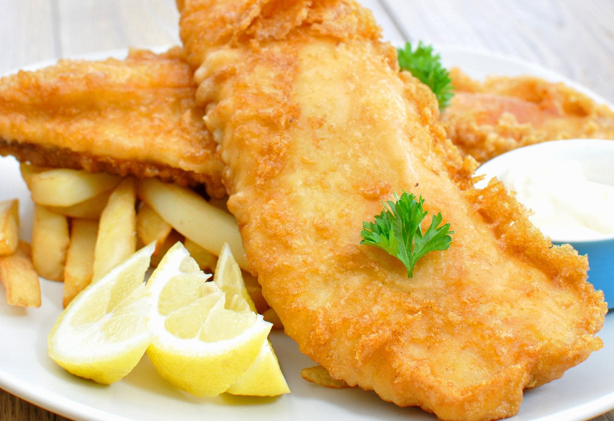

Fish&Chips

Description
Fish and chips is a classic British dish consisting of battered, fried fish
served with crispy fries, often accompanied by tartar sauce and malt vinegar.
Ingredients needed:
- White fish fillets (like cod or haddock)
- Potatoes (for the chips)
- Flour (for the batter)
- Baking powder (for a light, crispy batter)
- Water or beer (to make the batter)
- Salt and pepper (for seasoning)
- Oil (for deep frying)
Steps:
- Prepare the Fish
- Peel and slice the potatoes into thick chips (about 1/4 inch).
- Soak the potato slices in cold water for about 30 minutes to remove excess starch.
- Drain and pat them dry with a towel.
- Par-fry the Chips:
- Heat oil in a deep fryer or deep pan to 130°C (266°F).
- Fry the chips in batches for about 5-6 minutes until soft but not golden.
- Remove the chips and drain them on a paper towel.
- Prepare the Batter:
- In a bowl, mix flour (about 1 cup) and baking powder (1 tsp) with salt and pepper.
- Gradually add cold water (or beer) to the dry ingredients, whisking until smooth and thick. The batter should coat the back of a spoon.
- Prepare the Fish:
- Heat oil to 180°C (356°F).
- Carefully lower the battered fish fillets into the hot oil.
- Fry for 5-7 minutes until golden brown and crispy.
- Remove and drain the fish on paper towels.
- Fry the Chips Again:
- Increase the oil temperature to 180°C (356°F).
- Fry the chips a second time for about 3-4 minutes until they are golden and crispy.
- Drain the chips on paper towels and season with salt